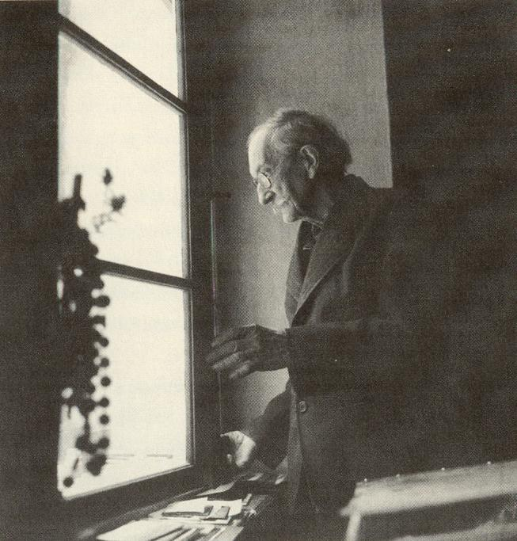

Osamìlý
pastýø Bohuslav Reynek

Narodil
se v rodinì statkáøe 31. kvìtna 1892 v Petrkovì u Havlíèkova Brodu.
Kdy¾ otec statek v Petrkovì pronajal a
celá rodina se odstìhovala do Jihlavy, studoval na nìmecké
reálce, kde na nìho mìl znaèný vliv M. Eisler
(pozdìj¹í docent dìjin umìní na vídeòské
univerzitì), který u Reynka probudil zájem o poezii a
malíøství. Na jihlavské reálce rovnì¾
nav¹tìvoval hodiny kreslení, co¾ bylo jeho jediné
výtvarné vzdìlání. Na otcovo pøání
ode¹el do Prahy, kde zaèal studovat zemìdìlský obor na c.
k. Vysoké ¹kole technické, kterou v¹ak u¾ v
listopadu pro naprostý nezájem opustil a vrátil
se do Petrkova. Odtud se v prosinci vydal na svou první cestu
do francouzské Bretanì; tehdy také zaèal malovat a
psát poezii - svoje první ver¹e otiskl 1913 v Moderní
revui.
Roku 1914 se seznámil se staroøí¹ským
vydavatelem Josefem Florianem, s ním¾ úzce
spolupracoval a¾ do jeho smrti.
Zaujat básnickou
sbírkou Ta vie est lá ... (1923) vydal se do Grenoblu,
aby se seznámil s její autorkou Suzanne Renaudovou
(1889 -1964). Roku 1926 se s ní o¾enil.
V období
1926-36 ¾il s rodinou pravidelnì pùl roku ve Francii a pùl roku v
Petrkovì, kde po otcovì smrti zùstal trvale a ujal se øízení
statku. Mezi èeskými spisovateli na¹el pøátele ve
Franti¹ku Halasovi, Vladimíru Holanovi a Ivanu Divi¹ovi; z
výtvarníkù pak v Josefu Èapkovi, Vlastimilovi
Hofmanovi a Jaroslavu ©erých.
Reynkova
první samostatná výstava v Èechách se
uskuteènila, díky iniciativì Vlastimila Vokolka, v roce 1929
v Pardubicích. V prosinci 1932 pí¹e z Francie
Vokolkovi, zda by mu nemohl sehnat a poslat "nìjakou bro¾uru",
z ní¾ by se mohl pouèit o výtvarné technice
suché jehly. Vokolek mu do Grenoblu poslal ©imonovu "Pøíruèku
umìlce-grafika", s její¾ pomocí se stal Reynek
tím typem grafika, jak jej v pøevá¾né vìt¹inì
dnes známe.
Za nìmecké okupace byl v pøinucen
pronajmout statek Nìmcùm a v èervnu 1944 opustit Petrkov.
Pøestìhoval se i s rodinou do Staré Øí¹e k dìtem
Josefa Floriana, kde zùstal a¾ do konce války. V roce 1945
se vrátil do Petrkova a opìt hospodaøil na statku, který
se v¹ak roku 1949 stal souèástí Státních
statkù v Petrkovì; jako jejich zemìdìlský dìlník
pak pracoval do roku 1957. Poté se a¾ do své smrti
vìnoval pøedev¹ím grafické tvorbì a psaní
poezie.
A¾ v roce 1964 se uskuteènila první
pováleèná výstava Reynkových leptù v
ústeckém Divadle hudby. Z Reynka se stal objev sezóny,
výstavy následovaly jedna za druhou. Petrkov zaèaly
nav¹tìvovat televizní ¹táby a novináøi, na
náv¹tìvu pøijí¾dìli studenti, umìlci, básníci.
Petrkov se stal kultovním místem pro umìleckou
generaci 60. let. Reynek se svých výstav nezúèastòoval,
televizních ¹tábù si nev¹ímal a novináøùm
odpovídal pouze jednoslabiènì. Ze své tiché
samoty se nenechal nikým a nièím vyru¹it.
Zemøel
28. záøí 1971 - byl pohøben vedle Suzanne Renaudové
v hrobì svých rodièù na høbitovì ve Svatém Køí¾i
u Havlíèkova Brodu.
Odlet vla¹tovek
Odlétají
vla¹tovice
mlh a strnisk temné svíce,
¹ípy
èerných plamenù.
Pod støechou a nad pì¹inou
v krvi
namoèenou tøtinou
kreslí Amen na stìnu.
Oèi léta. Bolí. Hynou.
Nevzpomínej. Vzpomenu.
Uletìly. U¾ ne na¹e,
høeby v
oèích Tobiá¹e,
stébla z hnízda,
støepy z bláta,
touha v síti stínù jatá.
V tùni ryba uzdravení.
Tma je v síti. Ryba není.
Odletìly. V polích
stohy
sezlátly a v chlévech stlaní,
Ezaunovo
po¾ehnání,
hrstì slámy v pøítmí
dlani.
Osiøely v chlévech rohy,
pokácené
otazníky
na èele krav, køivé dýky,
pùlmìsíce
zjizvené.
Lampy zhaslé. Je¹tì ne.
Ztuhlé lokte rohù v
stáji
nikoho neobjímají,
po nìkom se
je¹tì ptají.
Bílá svìtla spadaná,
sliby
stydlé do rána
v slámì s otluèenou du¹í.
Nìmota, je¾ z kleneb stéká,
sloupù
s ko¹ilemi z mléka,
sloupù v plá¹ti z plísnì
mu¹í.
Sloupù stromù. V ráji
kvetly.
Èekají, a¾ zima setlí.
Èekají, a¾ zkamenìly.
Èekají. U¾ na andìly.
(Odlet vla¹tovek, 1969-1971, 1980)
Cesta tmou
Kdo chodí tmami
napøáhne dlanì.
Strom v cestì mámí,
zkrvácí skránì.
Èí stín jde s námi
za rány dlanì?
Cest cíl neznámý
chce peníz danì.
Strom neuhýbá
a neposvítí.
Strom, èerná ryba
v mraku síti.
Strom mezi stíny
a zemì pustá.
Kdy luny a viny
zahoøí ústa?
Kdy luna poví
plamenem ticha,
kdy vina slovy
proè kámen vzdychá?
(Odlet vla¹tovek, 1969-1971, 1980)